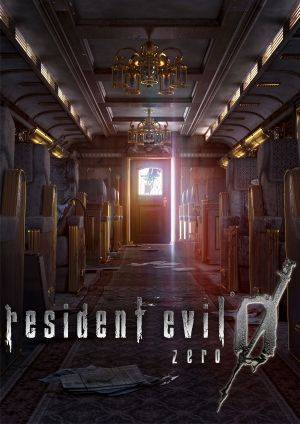

| Botão | Função |
|---|---|
| X | Ação / Confirmar |
Assista à impressionante cena em CG de introdução. Após terminar, você assumirá o papel de Rebecca Chambers, que embarcou no trem Ecliptic Express, que misteriosamente parou de funcionar dentro da Raccoon Forest.
Passenger Car
[Rebecca]
Vire à esquerda e passe pela porta para o próximo vagão.
Passenger Car 2
[Rebecca]
Haverá uma cut-scene, e então Rebecca estará lutando contra alguns zumbis. A sala é muito estreita para simplesmente desviar deles, então eu recomendo atirar até matá-los. Após os zumbis se irem, passe pela porta à frente.
Train Car Corridor
[Rebecca]
Siga pelo corredor e entre na primeira porta que Rebecca vir na área central.
Train Bunk Room
[Rebecca]
Dentro desta sala deve haver um arquivo e alguns itens de recuperação e munição para os modos de dificuldade mais fáceis. Quando pegar tudo, saia da sala.
Train Car Corridor
[Rebecca]
Siga pelo corredor por mais alguns passos e passe pela próxima porta que Rebecca encontrar.
Save Room
[Rebecca]
Assim como na sala anterior, há um arquivo e alguma recuperação e munição aqui. Há também uma máquina de escrever, que é usada para salvar o jogo desde que você tenha um INK RIBBON com você. Há um INK RIBBON perto da máquina de escrever. Ainda é bem cedo no jogo agora, então não há necessidade real de salvar ainda, mas você vai querer fazer isso com razoável frequência. Saia da sala quando terminar tudo.
Train Car Corridor
[Rebecca]
Continue se movendo pelo corredor. No final do corredor há um corpo morto segurando a TRAIN KEY. Pegue-a e então uma cut-scene ocorrerá. No final da cut-scene, você estará lutando contra alguns cães zumbis, então mate-os com sua HANDGUN. Reviste o corpo do Edward para encontrar HANDGUN BULLETS. Vá para a tela de inventário e examine a TRAIN KEY. Ela será renomeada para DINING KEY. Leve esta chave de volta ao PASSENGER CAR, que foi a primeira sala em que o jogo começou.
Passenger Car
[Rebecca]
Outra cut-scene ocorrerá, fique à vontade para assistir ou pular. Depois, vá para a porta na outra extremidade do vagão e destranque-a com a DINING KEY (TRAIN KEY) que você acabou de pegar. Descarte a chave depois, pois você não precisará mais dela.
Dining Car
[Rebecca]
Outra cut-scene ocorrerá. Quando terminar, pegue o arquivo próximo e suba as escadas.
Dining Car 2F
[Rebecca]
Entre na sala, em direção ao homem velho sentado sozinho na mesa distante. Uma cut-scene ocorrerá, e você será colocado em uma batalha contra um Leech Zombie, que é uma forma mais forte e ágil dos zumbis que temos enfrentado até agora. Você pode lutar contra ele, mas é mais sensato economizar munição e tentar correr de volta pelas escadas. Quando você fizer isso (ou se causar dano suficiente ao Leech Zombie), outra cut-scene ocorrerá, e Billy finalmente será um personagem jogável. Você pode querer continuar usando a Rebecca por enquanto. No extremo oposto da mesa perto de onde o velho estava sentado, há uma janela com uma escada que leva ao teto do trem. Faça o Billy ficar para trás e mande a Rebecca subir. Deixe o Billy para trás nesta sala.
Train Roof
[Rebecca]
Caminhe pelo teto do trem, descendo para onde as faíscas continuam acendendo. Examine os fios elétricos e opte por reconectá-los. Uma curta cut-scene ocorrerá. Rebecca estará agora na KITCHEN 2F.
Kitchen 2F
[Rebecca]
Rebecca ficará presa aqui porque a porta que sai da sala está temporariamente emperrada, mas felizmente ela pode mandar itens para o Billy através do conveniente monta-cargas (elevador de transporte de itens) normalmente usado para transportar comida para o primeiro andar. Há vários itens para pegar aqui, incluindo outra TRAIN KEY. Examine-a para que seja renomeada para CONDUCTOR'S KEY. Examine o monta-cargas, coloque a CONDUCTOR'S KEY lá dentro, e mande-a para o primeiro andar. Mude de volta para o Billy em seguida.
Dining Car 2F
[Billy]
Desça as escadas para o primeiro andar do DINING CAR.
Dining Car
[Billy]
Passe pela porta prateada ao lado das escadas, que levará a uma cozinha. Dobre a esquina e corra até o monta-cargas. Examine-o e pegue a CONDUCTOR'S KEY. Agora, retorne ao TRAIN CAR CORRIDOR, onde Rebecca encontrou o Billy pela primeira vez e falou com Edward.
Train Car Corridor
[Billy]
Corra pelo corredor e você verá uma terceira porta em algum lugar no meio pela qual você ainda não passou. Destranque-a com a CONDUCTOR'S KEY e entre.
Conductor's Room
[Billy]
Pode haver algumas GREEN e RED HERBS aqui nos níveis de dificuldade mais fáceis. Você deve verificar o armário na parede e pegar a BRIEFCASE. Na parede oposta, deve haver um interruptor vermelho piscando. Pressione-o para revelar uma escada, e você deve subi-la.
Train Bar
[Billy]
Corra pela sala até que uma cut-scene muito curta ocorra. Após a cena terminar, continue correndo pela sala e passe pela porta no final.
Passenger Car 2F
[Billy]
Mova-se pelo corredor. Você pode ver algumas GREEN e RED HERBS, mas o objeto de que você precisa para progredir está no carrinho. Pegue o ICE PICK e então entre na porta no meio do corredor.
Cabin
[Billy]
Nesta sala estará a poderosa HUNTING GUN, e talvez alguma SHOTGUN AMMO. Pegue a HUNTING GUN. Pegue também a SHOTGUN AMMO. Saia da sala quando terminar de gerenciar seus itens. Lembre-se de manter a HUNTING GUN com você. Retorne ao TRAIN BAR.
Train Bar
[Billy]
Corra para frente e uma cut-scene ocorrerá. Você estará se enfrentando o primeiro chefe do jogo.
Personagem: Billy ou Rebecca
Dificuldade: Moderada
Localização: Train Bar
Esta é a primeira luta de chefe do jogo, e é bastante básica em sua execução. Você é encurralado pelo Stinger, então corra para a parede de trás com a porta e comece a atirar com a HUNTING GUN. Use toda a SHOTGUN AMMO que você tiver contra a criatura antes de trocar para a HANDGUN e continuar a partir daí. O Stinger não é um chefe difícil, mas causa muito dano e é um pouco difícil de evitar. Ter pelo menos um item de recuperação total e munição suficiente garantirá uma vitória por atrito. Basicamente, continue atirando e curando e eventualmente o Stinger morrerá. Quando o Stinger tiver espasmos rumo à morte, tente ficar longe dele, pois ele lançará suas pinças para um último contra-ataque, que causa muito dano. Se por acaso você estiver jogando como Rebecca, tenha cuidado, pois isso pode possivelmente matá-la.
Retorne ao DINING CAR após derrotar o chefe. Certifique-se de ter a BRIEFCASE e o ICE PICK com você antes de prosseguir. Você pode deixar a HUNTING GUN para trás já que ela ocupa 2 espaços de inventário. Você provavelmente não precisará dela pelo resto da seção do trem. Você verá um PANEL OPENER em meio aos destroços, então pegue-o também.
Dining Car
[Billy]
Retorne ao monta-cargas e envie para a Rebecca o ICE PICK. Mude de volta para a Rebecca, que ainda está presa na KITCHEN 2F.
Kitchen 2F
[Rebecca]
Procure no monta-cargas pelo ICE PICK. Use o ICE PICK na maçaneta para destravá-la e libertar Rebecca. Pegue qualquer outra coisa de que precise antes de sair. Junte-se ao Billy no andar inferior do DINING CAR imediatamente.
Dining Car
[Rebecca]
Reúna-se com Billy e faça-o seguir você. Descendo a sala, perto dos armários há um painel no chão, que você pode abrir com o PANEL OPENER (Billy deve ter isso). Mude para Billy.
[Billy]
Abra o painel e entre no espaço apertado (crawl space) em direção à próxima sala.
Storage Room
[Billy]
Pegue o GAS TANK que você vê perto da porta. Na outra extremidade da sala há um GOLD RING. Pegue-o, e então combine-o com a BRIEFCASE que você encontrou anteriormente. Depois, passe pela porta no final da sala (não aquela perto do espaço apertado).
Hookshot Room
[Billy]
Há um botão na parede do trem que está piscando, certifique-se de dizer à sua parceira (Rebecca, neste detonado) para ficar para trás ou que você irá em frente sozinho. Então, aperte o botão e, sem dar um passo, troque para a parceira.
[Rebecca]
Pegue a HOOKSHOT, agora que foi liberada da parede. Tenha cuidado para não fazer o Billy se mover enquanto ele está segurando o botão, ou então a HOOKSHOT ficará presa novamente e você terá que apertar o botão mais uma vez. Com a HOOKSHOT em mãos, retorne ao PASSENGER CAR 2.
Passenger Car 2
[Rebecca]
Ao lado da porta lá pelas escadas há uma janela. Dela, você pode usar a HOOKSHOT para alcançar o teto, então faça isso com a Rebecca. Por favor, certifique-se de que não há zumbis vivos nesta sala, pois você deixará seu parceiro para trás temporariamente (embora não por tanto tempo quanto quando Rebecca ficou presa na KITCHEN 2F).
Train Roof 2
[Rebecca]
Caminhe pelo teto e você verá mais um buraco que leva de volta para dentro do trem. Pule para baixo (ao invés de ser empurrado à força como da primeira vez).
Cabin 2
[Rebecca]
Mate o zumbi aguardando nesta sala, e pegue a HANDGUN AMMO e a JEWELRY BOX. Examine a JEWELRY BOX para encontrar um SILVER RING. Combine-o com a BRIEFCASE para descobrir o BLUE KEYCARD dentro dela. Tente sair da sala e uma cena curta ocorrerá. Após o fim, saia da sala.
Passenger Car 2F
[Rebecca]
Você estará de volta neste corredor, mas agora a montanha de sanguessugas se foi, permitindo-lhe acessar a escada que leva de volta ao PASSENGER CAR 2.
Passenger Car 2
[Billy]
Billy se reunirá com Rebecca, e com o BLUE KEYCARD na mão, agora você pode acessar a área do ENGINE CAR. Retorne ao TRAIN CAR CORRIDOR (a sala com o corpo de Edward). Se quiser, pare na SAVE ROOM e salve o jogo na máquina de escrever antes de prosseguir.
Train Car Corridor
[Billy]
Corra até o final do corredor e use o BLUE KEYCARD para destrancar a porta. Passe por ela depois.
Engine Car
[Billy]
Uma cena ocorrerá e, depois, você poderá seguir pelo vagão. Passe pela porta no fim.
Control Room
[Billy]
Escolha se Rebecca ou Billy deve ficar para trás. Pegue o MAGNETIC CARD e duas caixas de HANDGUN AMMO. Em seguida, faça Rebecca/Billy correr de volta para onde pegou a HOOKSHOT. Rebecca terá uma cut-scene com Edward.
Hookshot Room
[Billy/Rebecca]
Insira o MAGNETIC CARD no pequeno leitor de cartão à esquerda da porta. Isso ativará um quebra-cabeça que você precisará resolver. Por um motivo estranho, você precisa pressionar um número de 1 a 9 em ordem aleatória por 10 vezes de modo que a soma chegue ao número exibido. Lembre-se, o relógio está correndo, então não perca muito tempo. Algumas soluções encontradas:
Soma para 67: 9 | 9 | 9 | 9 | 9 | 5 | 5 | 5 | 5 | 2
Soma para 36: 5 | 5 | 5 | 5 | 5 | 5 | 2 | 2 | 1 | 1
Soma para 81: 9 | 9 | 9 | 9 | 9 | 9 | 9 | 9 | 8 | 1
Control Room
[Billy/Rebecca]
Após concluir o primeiro enigma, o controle passa para o personagem alternativo e você deve concluir mais um enigma. Este é um pouco mais difícil pois você não verá as somas se acumulando, tendo que usar a cabeça para lembrar da soma atual. Algumas soluções que encontrei:
Soma para 81: 9 | 9 | 9 | 9 | 9 | 9 | 9 | 9 | 8 | 1
Soma para 36: 5 | 5 | 5 | 5 | 5 | 5 | 2 | 2 | 1 | 1
Soma para 67: 9 | 9 | 9 | 9 | 9 | 5 | 5 | 5 | 5 | 2
| Versão | Ano | Destaques | Recomendado para |
|---|---|---|---|